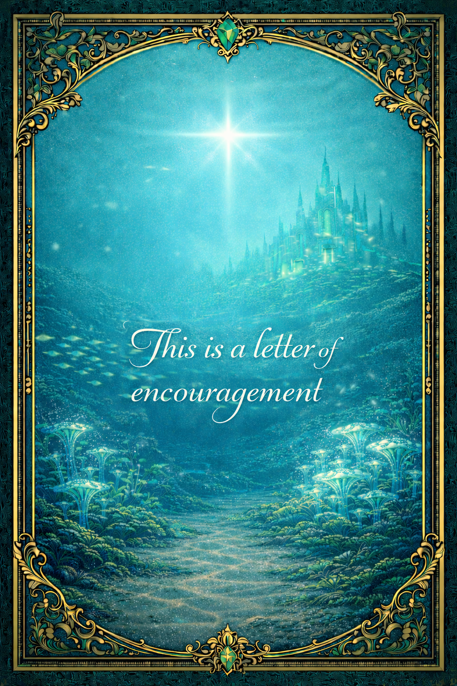
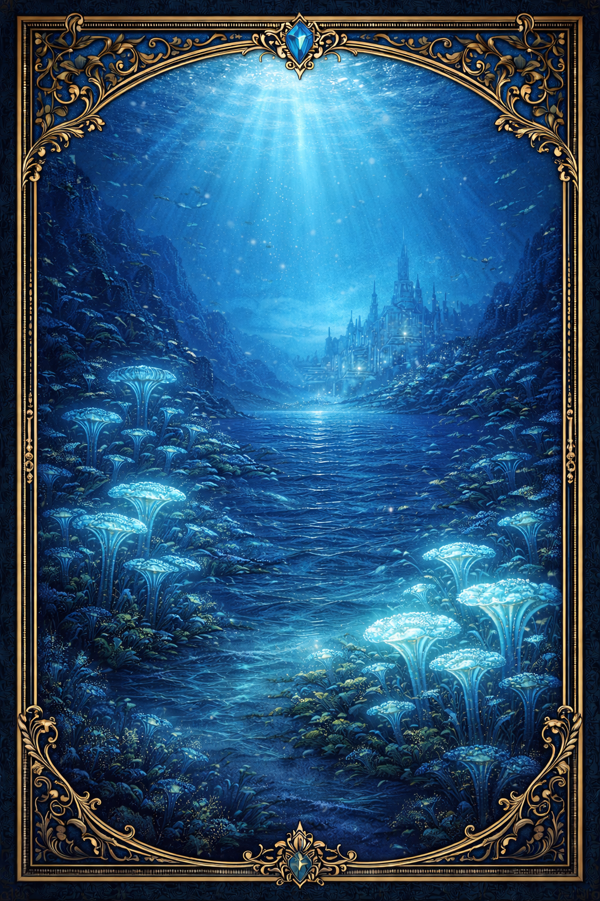
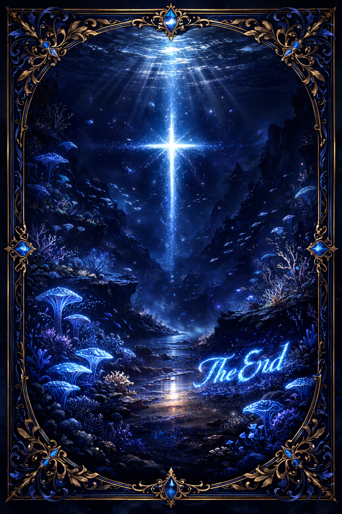

Dear Johanna Behm,
Hi — first off, I’m giving you a thumbs up with my mind.
After our e-date, I meant to send you a letter of encouragement. I’m glad to hear that you finally got your schedule under control. It’s easy to assume that school should be manageable and not take much effort, but if you’re trying to do very well, it requires a tremendous amount of work. I’m glad you recognize your limits and are willing to create boundaries, especially when it comes to school.
I also want to encourage you to hold onto the conviction that, in general, people and relationships are the most valuable things in life. No school, job, or career will ever be so important that life would still feel full of purpose and meaning without people—family and friends.
When Jesus says to seek first the kingdom and His righteousness, that principle is clear. The two greatest commandments He gave were to love God and love your neighbor. What is noticeably absent is “love school” or “love career.” So when choices must be made about what takes priority, the thing that should usually be adjusted or reduced is the latter, not the former.
